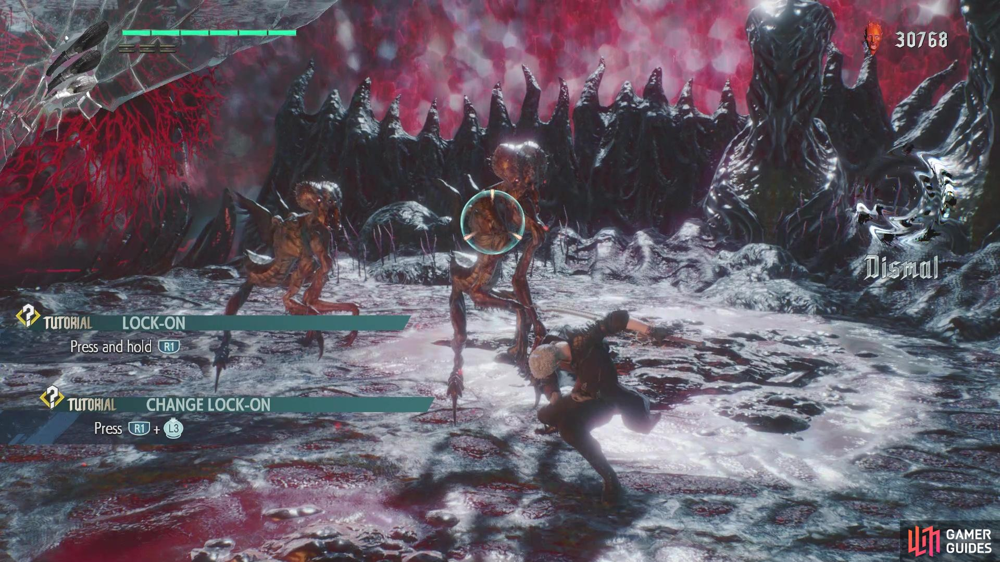
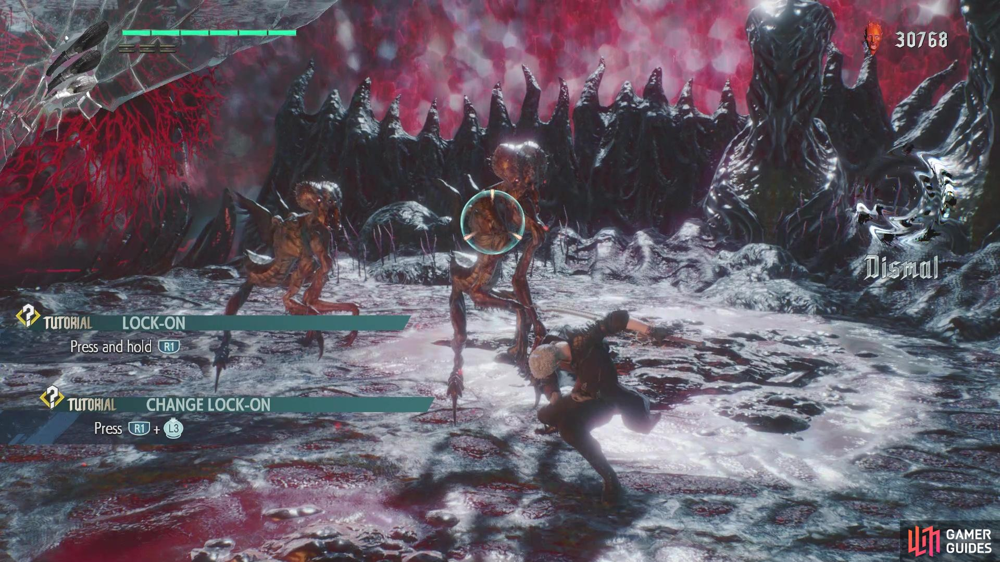

Thomas Billett
Solar Spark - CaliCat Studios
Grade Awarded - 1st
Introduction
Embark on an extraordinary journey where SolarPunk meets Ancient Egyptian Mythology. As the exiled
queen, Eset, you will be thrust into an epic quest to revive your beloved Osiris and topple the ruinous
powers of the Desert King, Set.
This single-player action-adventure game offers exploration, mind-bending puzzles, and intense combat.
With a stylized art direction, you will fall in love with the awe-inspiring landscapes and rich
narrative you come across throughout your journey.
Solar Spark was created in my final year at Falmouth University with a years development time and it is the project I am most proud of. This project was created by a total of 13 people, composed of 3 programmers, 3 designers, 5 artists, a writer and an animator.
My Roles
- AI Programmer: This was my specialism in the project and where a large amount of my efforts were focused. Created AI systems for enemies.
Contributions
- Enemy AI & Animations: I created the sword and axe enemy variants, configured animations and repurposed existing AI functionality to create the final boss.
- Input System: Used Unity's input package to create a robust system, allowing for customisation for whatever we needed. Also included input prompts with a corresponding icon for several different controller.
- Menu System: Using simple button elements, I constructed the main menu, pause menu and settings menu,
- Camera: The Cinemachine package was used to get a basic camera, then finer details were adjusted to get the camera we desired.
- Build Creation: I was responsible for creating weekly builds to ensure frequent playtesting.
- Debug Tools: To reduce designer 'blockers' I created a noclip system and a checkpoint system.
- Bugfixing: Any bugs that were found during playtesting were noted down and fixed by me and the other programmers.
Enemy AI
To create the AI, I decided to use behaviour trees for the project. This was for several reasons:
- Ease of troubleshooting due to its visual nature.
- Modularity allows nodes to be interchanged to quickly create or modify behaviours.
- Familiarity with this approach.
I used a package from the asset store to avoid having to create a behaviour tree system from scratch which would have taken precious time from the project see below
Find Player
I began by creating a node which would detect the player, so that only enemies close to the player would engage. I went with a 'field of view' cone approach, by checking collisions in sphere then checking if there is a valid angle to the player.
Generic enemy behaviour tree, from TheKiwiCoder package
Boss AI
Sobek was the final component of our vertical slice. A mechanical crocodile scientist corrupted by the influence of the villain Set, he serves as the boss encounter.
For the design he was to be imposing and a serious threat to the player, with his weakness being his speed. This was all taken into account with its AI. A video of the fight is available below.
Scripts
FindPlayer
- A Field of view check to determine if player is in sight
FindAttackers
- Determines if there is an available space to attack the player
Input System
Working closely with designers. The first step was to decide on what abilties and actions we wanted the player to have, afterward we could begin creating a control layout. We decided upon
a easy to pickup control scheme.
We decided upon a light attack & wide attack, a dash to quickly traverse the battlefield, a jump to navigate the environments, a interaction key, a block to
avoid enemy damage and with correct timing allow for a parry, a special attack and a healing ability.
Prompts
I encouraged moving over to the new Unity input system as quickly as possible. As the longer this took the more code we would have to refactor and the less flexibility we would have with button interactions. In addition, I used the Input Icons package to create dynamic icon prompts in the tutorial, updating when the user switches to a different input device.
The image above shows the menu rebinding screen, players can change the input for the controls for either gamepad or keyboard.
Camera
Since I had prior experience in creating a camera system I was chosen to make it. It would need to be fast and responsive, in alignment with the fast paced hack and slash combat system. We drew inspiration from games such as Devil May Cry 5 and NieR: Automata.
 

NieR: Automata by Square Enix.
I decided to use Cinemachine for the camera system rather than creating my own from scratch. Cinemachine has many advantages such as:
- Development time saved can be allocated elsewhere.
- It is highly customisable with a camera suitable for any genre of game.
- Supported by Unity as an offical package with its own documentation.
- Changes are quick to make, mostly by changing values on components unless custom behaviours are required.
In order to test the camera, I created a small environment with a variety of different walls to simulate
the different elevations
that the camera would have to deal with. For the virtual cinemachine camera, I decided to use 'Framing Transposer' body with POV aim as it was most similar to a 3rd person
follow.
After coming up with a prototype that I was pleased with, I showed the progress to the team. The changes I made were to move the camera
further back. We felt that it being close to the player could make it difficult to anticipate enemy movements.
Game Feel
Later on in the project we were given feedback that we needed to improve game feel. Using Cinemachine impulse impulse allowed me to add camera shake, via an event. This meant that when the player dealt damage to enemies, used a special attack or took damage, there would be a small amount of shake. This achieved the goal of improving game feel.
Scripts
CameraLockOn
- Locks the camera onto the closest enemy within a valid angle
CameraShake
- Adds an event which can be called to shake the Cinemachine Vcam